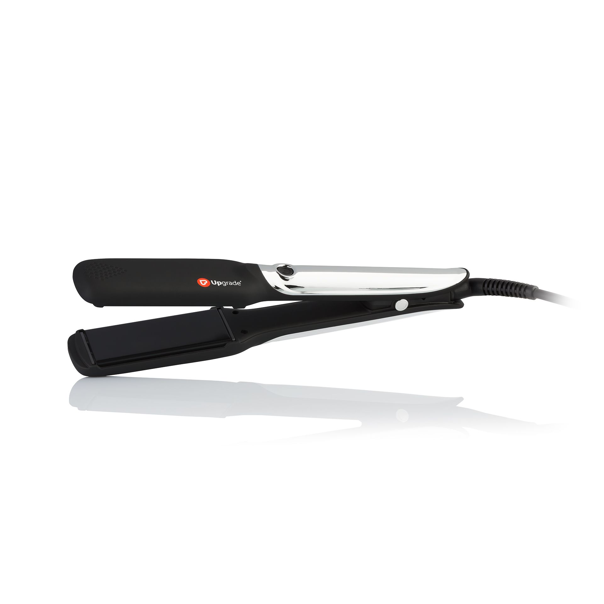

Plaukų tiesintuvai, kaip pasirinkti tiesintuvą?
 Pradžia Plaukų spalvos 2016 Šukuosenos 2015 Straipsniai Plaukų dažai 6 plaukų dažų rūšys Natūralūs plaukų dažai Nauja plaukų dažų karta Nuplaunami plaukų dažai Permanentiniai plaukų dažai Plaukų dažai su metalais Plaukus šviesinančios priemonės Dažytų plaukų priežiūra 9 kasdienės plaukų priežiūros taisyklės Ką daryti po plaukų dažymo? Natūralios priemonės dažytiems plaukams Įdomioji plaukų dažų istorija Ateities plaukų dažai Blondinės, tamsios ir raudonos Senovės paslaptys Viskas prasidėjo nuo meilės... XIX a. atradimai Kaip pasirinkti plaukų spalvą? Ar Jums tiktų ryži plaukai? Ar Jums tiktų šviesūs plaukai? Ar Jums tiktų tamsūs plaukai? Kokia spalva dažyti žilus plaukus? Plaukų spalvos - 4 metų laikai Plaukų spalvos derinimas TOP patarimai renkantis plaukų spalvą Natūralūs plaukų dažai Arbata Ąžuolas Basma plaukų dažai Chna ir basma dažai Chna plaukų dažai Graikiniai riešutai Kaip dažyti natūraliais dažais namuose? Kaip tapti natūralia blondine? Kaip tapti natūralia brunete? Kaip tapti natūralia juodaplauke? Kaip tapti natūralia raudonplauke? Kaip tapti natūralia šatene? Natūralūs dažai žiliems plaukams Rabarbaras Ramunėlės Svogūnų lukštai Nėštumas ir plaukų dažymas 9 patarimai nėštukei Plaukų dažymas nėštumo metu Plaukų dažymas sruogelėmis 11 dažymo sruogomis būdų Kaip dažyti sruogas kreidelėmis? Kaip dažyti sruogelėmis namuose? Kokios spalvos sruogelės tiktų? Plaukų dažymo būdai Koloravimas Miliravimas Plaukų spalvos pašalinimas Tonavimas Profesionalūs plaukų dažai Alfaparf plaukų dažai Faberlic plaukų dažai Garnier plaukų dažai Goldwell plaukų dažai Joico plaukų dažai Keune plaukų dažai L oreal plaukų dažai Londa plaukų dažai Matrix plaukų dažai Milkshake plaukų dažai Palette plaukų dažai Revlon plaukų dažai Schwarzkopf plaukų dažai Syoss plaukų dažai Wella plaukų dažai Raudoni plaukai 7 patarimai dažant plaukus raudonai Raudoni plaukų dažai Plaukų slinkimas 23 patarimai kasdienai Kodėl slenka plaukai? Mezoterapija plaukams Plaukų slinkimas po gimdymo Priemonės nuo plaukų slinkimo Vitaminai ir mityba Aromaterapija nuo slinkimo Augaliniai aliejai nuo slinkimo Galvos (plaukų) masažas Liaudies priemonės Namų kaukės plaukams Simptomai ir diagnostika Slinkimas po chemoterapijos Plaukų tiesinimas 10 tiesinimo patarimų 7 plaukų tiesinimo būdai Braziliškas tiesinimas keratinu Kainos ir grožio salonai Keratininio tiesinimo + ir - Priežiūra po tiesinimo Tiesinimas bio keratinu Tiesinimo keratinu eiga Ilgalaikis (cheminis) tiesinimas Cheminio tiesinimo + ir - Cheminio tiesinimo eiga Ilgalaikio tiesinimo kaina Japoniškas tiesinimas Natūralūs tiesinimo būdai 9 receptai plaukams Plaukų tiesinimas fenu Plaukų tiesinimo kosmetika Plaukų tiesintuvas Geriausios tiesinimo žnyplės Kaip tiesinti namuose? TOP15 tiesintuvų rūšys Žvaigždės tiesiais plaukais Perukai 8 priežastys nešioti peruką Ar perukai kenkia sveikatai? Kaip pasirinkti peruką? Kaip paslėpti trūkumus? Perukas pagal veido formą Peruko dydis Peruko pagrindas ir plaukai Peruko spalva Perukų gamyba Kaip užsidėti peruką? Kokių plaukų peruką rinktis? Peruko priežiūra Natūralaus peruko priežiūra Sintetinio peruko priežiūra Perukų istorija Nuo klestėjimo iki uždraudimo Perukai Antikos laikais Pirmieji perukai Šiuolaikiniai perukai XX a. perukai Perukų kainos Perukų rūšys Už ir prieš: natūralus ar sintetinis perukas? Plaukų tiesintuvas
Kai plaukai labai garbanoti ir nepadeda fenas su šukomis, tuomet naudojamas plaukų tiesintuvas (plaukų tiesinimo žnyplės), kuris suspaudžia plaukus kaip presas, juos įkaitina ir tokiu būdu ištiesina. Šiuo būdu plaukus galima tiesinti tiek namuose, tiek kirpykloje. Kirpykloje ištiesinti plaukai išsilaikys ilgesnį laiką, procedūrai atlikti reikalingi įgūdžiai, tačiau ir chemijos naudojama daugiau nei namuose.
Jis efektyvesnis nei fenas ir tinka beveik visiems plaukų tipams . Tačiau rezultatas bus trumpalaikis - iki pirmo plaukų sudrėkinimo. Dar vienas minusas – tiesintuvai labiau žaloja plaukus nei fenai (juos sausina), dėl to jų negalima dažnai naudoti ir po procedūros būtina speciali plaukų priežiūra ir gydymas. Nors plaukų tiesinimas žnyplėmis mažiau kenkia plaukams nei cheminis tiesinimas.
Į KĄ ATKREIPTI DĖMESĮ, RENKANTIS TIESINTUVĄ?
1. Medžiagas , iš kurių pagamintas tiesintuvas:
2. Rinkitės tiesintuvą su keliais temperatūrų režimais .
3. Gali būti tiesintuvai, skirti namams (buitiniai) arba profesionalūs . Namuose galima naudoti ir profesionalų tiesintuvą. Jis santykinai brangesnis, tačiau saugesnis, mažiau žaloja plaukus, greičiau įkaista, turi daugiau įvairių funkcijų ir priedų šukuosenos formavimui.
4. Tiesintuvo plokštelės:
Taip pat skaitykite:
Tiesinimo žnyplių (prekės ženklų) palyginimo lentelė
Plaukų tiesintuvų rūšys
Plaukų tiesinimo namuose eiga
KOMENTARAI (0) Produktai Plaukų spalvos 2013 Plaukų spalvos 2014 Plaukų spalvos 2015 Kontaktai Svetainės naudojimo taisyklės
© 2013 - 2020 Plaukų gidas. Visos teisės saugomos.